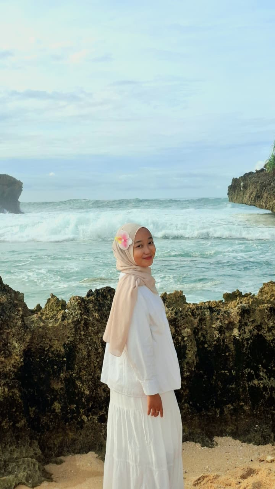

Mahasiswi Informatika yang memiliki minat dalam pengembangan aplikasi web dan mobile. Berpengalaman dalam membangun aplikasi menggunakan berbagai teknologi modern serta memiliki ketertarikan dalam UI/UX dan pengembangan sistem.

Saya adalah mahasiswa Manajemen Informatika Universitas Negeri Surabaya yang memiliki minat pada pengembangan aplikasi web dan mobile. Saya memiliki pengalaman dalam menggunakan berbagai teknologi modern seperti Flutter, Laravel, dan pengembangan REST API. Saya tertarik dalam membangun solusi digital yang tidak hanya berfungsi dengan baik tetapi juga memiliki tampilan yang menarik dan user friendly.
Membangun aplikasi mobile modern dengan UI yang clean dan performa yang optimal.
Membangun sistem berbasis web dengan autentikasi, CRUD, dan manajemen data.
Mengembangkan backend service serta integrasi API untuk berbagai aplikasi.
Mendesain tampilan aplikasi yang modern, user-friendly dan responsif.
Mengembangkan sistem helpdesk IT berbasis Configuration Item untuk meningkatkan pengelolaan data dan proses support IT. Melakukan transformasi digital spreadsheet menggunakan Grist serta membantu implementasi sistem berbasis Docker untuk pengelolaan infrastruktur aplikasi.
Email : chatetinafd110505@gmail.com
Instagram : @Chtrinafd_
LinkedIn : linkedin.com/in/chaterina-fatma-diaksa
GitHub : github.com/chtfd